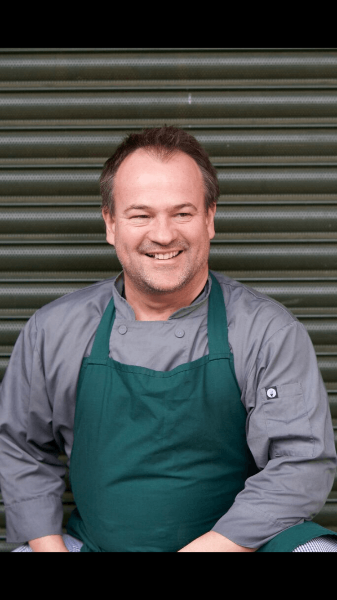
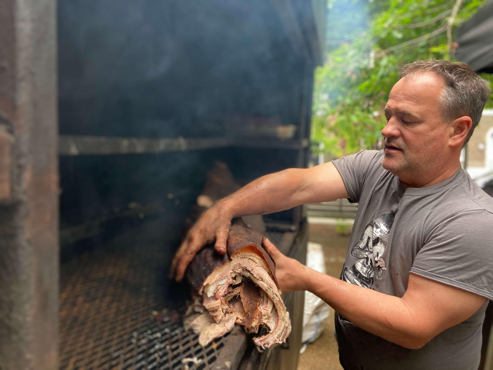
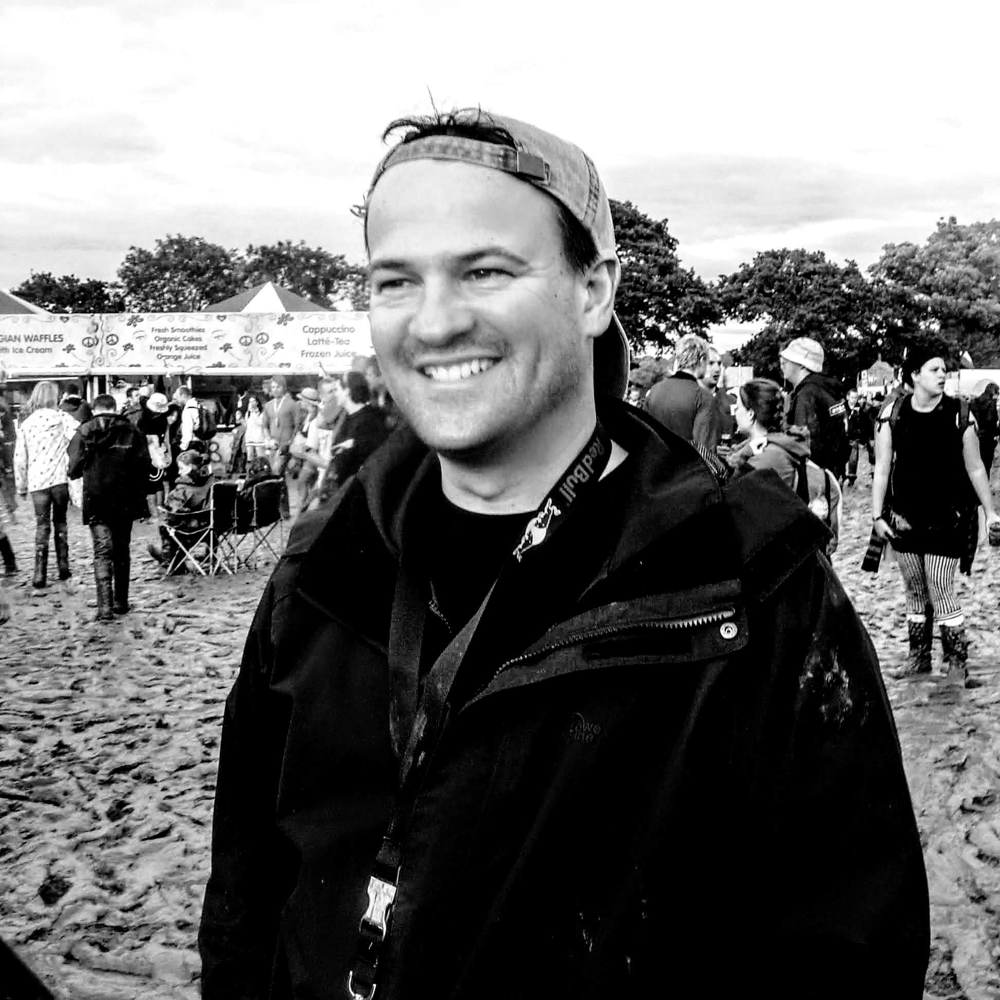
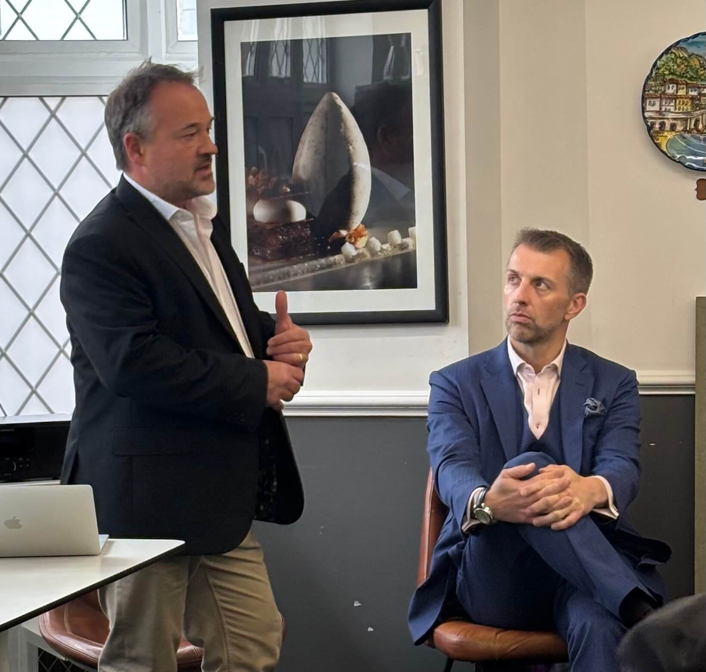
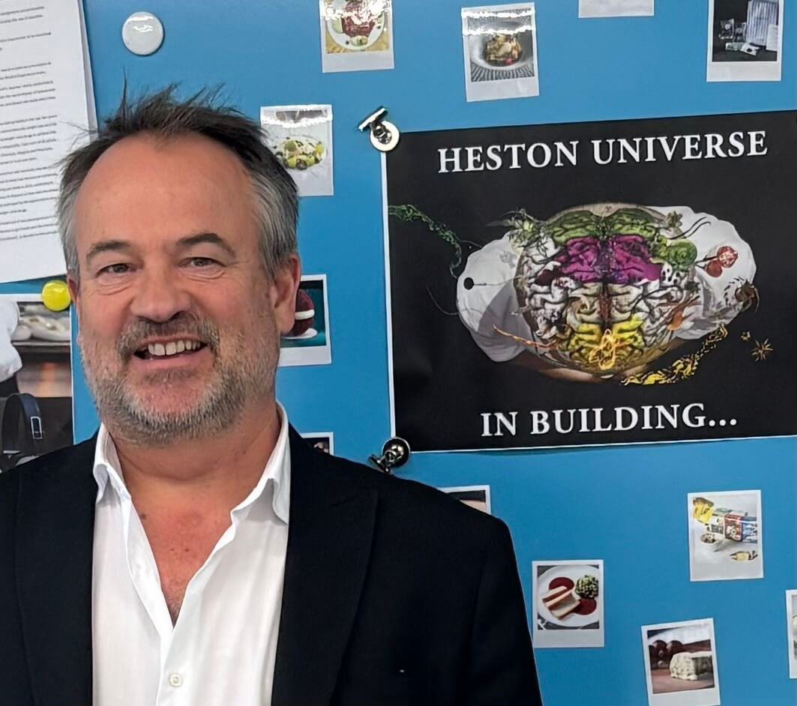

Hospitality Leadership Transformation
Proven at The Fat Duck. Trusted by multi-site operators. I work with hospitality organisations to transform how their leaders communicate, develop people, and retain talent — by addressing the root causes, not the symptoms.

About
Hospitality promotes its best operators into leadership roles and gives them no training in how to develop people. The result is predictable: high turnover, burned-out managers, teams that wait to be told what to do, and standards that slip the moment the leader looks away.
I've spent 30 years on the front line — from crew member to general manager — and I've seen this pattern destroy talented people and profitable businesses. My Mental Kitchen exists to break that cycle.
I'm a certified transformational coach with a foundation in psychodynamic psychotherapy and counselling, a qualified Mental Health First Aider, and I still run active restaurant operations through The Gipsy Hill Smokehouse. I haven't left the industry to talk about it from the outside. I'm still in it.
What I Do
An 8-week programme for cohorts of 6-10 leaders. Combines one-to-one coaching with facilitated group sessions built around real operational challenges. This is the programme The Fat Duck ran twice — because it changed how their leadership team communicates, develops people, and holds accountability.
For individual hospitality leaders ready to understand their own patterns — why they default to control, why they can't delegate, why their best people keep leaving. Direct, honest coaching grounded in real operational experience.
Facilitated sessions that position leadership alongside their teams, not above them. A structured reset that builds psychological safety and gives people permission to talk about what's actually going on.
Premium live fire catering for events across South East London. Still operating. Still in the industry. The craft of hospitality made visceral.
Accredited Programme
My Mental Kitchen is a hospitality training and mentoring programme that supports your organisation by helping leaders empower their teams. It carries 30 CPD points and is accredited by AIM Qualifications and NOCN (National Open College Network).
Shift leaders from authority-driven control to accountability-driven culture
Bridge the generational gap between experienced leaders and younger team members
Build communication skills that work under pressure — not just in a training room
Create feedback systems and peer support structures that outlast the programme
Active Listening, Clear Language, Building Rapport, Accountability, Conflict Resolution
Motivational Drivers, Empathy, Trust, Career Progression, Job Attrition
Emotional & Positive Intelligence, Mental Health, Reverse Mentoring, Learning Edge
“The leadership programme at The Fat Duck has been nothing short of transformative. It has provided our team with the tools, insights, and confidence to bridge generational gaps, handle pressure with grace, and elevate every aspect of our kitchen culture.”
— The Fat Duck Group
Ventures

London Gourmet Barbecue & Hog Roast Catering
Established in 2004, The Gipsy Hill Smokehouse provides premium hog roast and barbecue catering for weddings, private parties, and corporate events across London. Featured on Gordon Ramsay's F-Word and proud to have catered for The Fat Duck in Bray.

Hospitality Training & Mentoring Programme
An accredited training and mentoring programme that helps hospitality organisations build resilient, high-performing teams. Focused on emotional intelligence, communication, and creating workplaces that support mental health.
“Guest hospitality is impossible without employee hospitality. Accountability flourishes through care and clarity — never through fear.”
— The foundation of everything I teach
Track Record
Two cohorts delivered across The Fat Duck and The Hinds Head. Restaurant Managers, Sous Chefs, and Sommeliers developed the leadership skills to shift from fear-based authority to trusted, accountable leadership. The Managing Director and Executive Chef participated in alignment sessions, embedding the programme into the organisation's broader culture. They commissioned Cohort 2 before the first had finished.
Programme delivered to General Managers and Chefs across five pub sites. Addressed owner-identified operational challenges — consistency, cleanliness, accountability, hospitality standards — by revealing and resolving the underlying leadership and cultural dynamics that caused them. Included a two-day leadership away day incorporating strategic planning and accountability mapping.
This programme works in a 3 Michelin Star kitchen and in a 5-pub chain. It works with Sous Chefs and with General Managers. It works because it addresses the root cause — how leaders show up — not the symptoms.
In Action


Testimonials
“It made a remarkable change working with Tim. He helped me to identify clear steps to take action to grow my business. Tim brings a lot of experience and tools to help me realise myself and have insights about what needs to be done to develop an idea.”
— Miguel Issa“The leadership programme at The Fat Duck has been nothing short of transformative. It has provided our team with the tools, insights, and confidence to bridge generational gaps, handle pressure with grace, and elevate every aspect of our kitchen culture.”
— The Fat Duck GroupAfter the first cohort, The Fat Duck immediately commissioned a second — extending the programme to include their sister restaurant, The Hinds Head. Elite establishments don't repeat programmes that don't deliver results.
— Programme track recordLet's Talk
Book a free 30-minute discovery call. No pitch, no pressure — just an honest conversation about where you are and where you want to be.